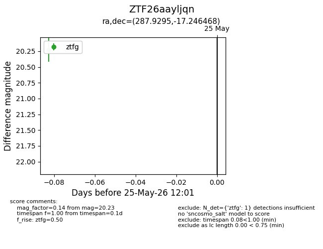
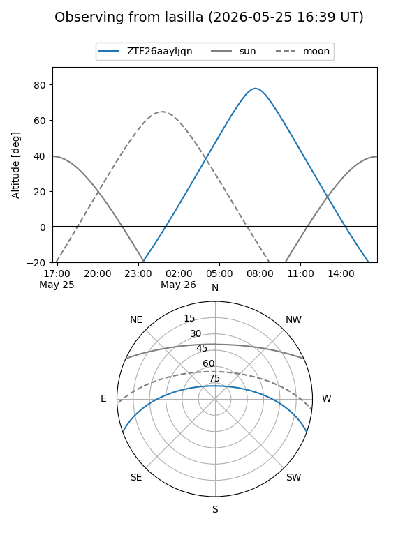
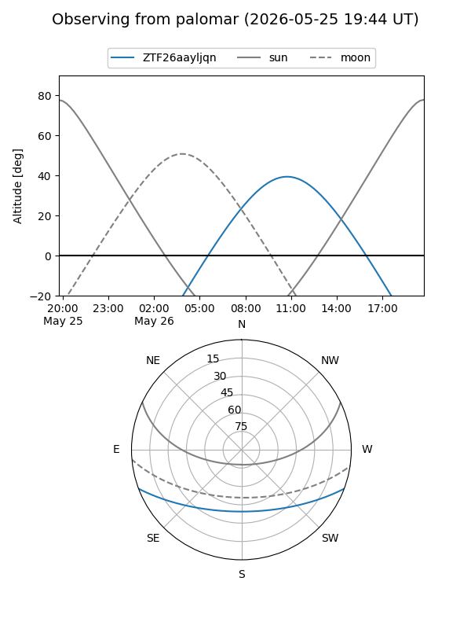

ZTF26aayljqn
Target ZTF26aayljqn at 2026-05-25 12:02
Aliases and brokers:
lsst-FINK: link
lsst-Lasair: link
lsst-ALeRCE: link
ztf-FINK: link
ztf-Lasair: link
ztf-ALeRCE: link
alt names
ZTF26aayljqn (ztf,fink_ztf)
Coordinates:
equatorial (ra, dec) = 287.9295,-17.24647
equatorial (HMS+DMS) = 19:11:43.09,-17:14:47.29
galactic (l, b) = (19.6033,-12.14032)
Flags:
Photometry:
last ztfg=20.23
1 ztfg detections
Lightcurve

Visibility


Additional plots